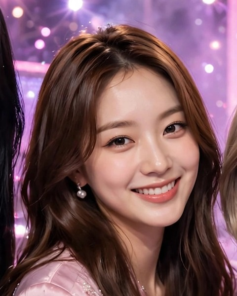
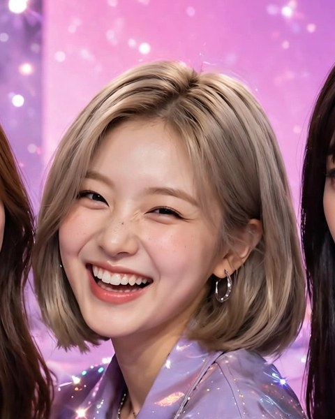

The Four Strings
네 줄
JIA · MINA · SORA · RIN
서로 다른 네 개의 목소리가 하나의 노래로 모이는 팀입니다.
네 줄
서로 다른 네 개의 목소리가 하나의 노래로 모이는 팀입니다.
The Four Strings는 지아, 미나, 소라, 린 네 명으로 이루어진 그룹입니다.
서로 다른 네 개의 목소리가 하나의 노래로 모이는 팀입니다. 이제 시작하는 자리지만, 한 곡 한 곡 정직하게 만들어가겠습니다.
— 지아
내가 낸 이름이야. 정확히는 두 개 냈고, 아빠가 이걸 골랐어.
현이 하나면 소리가 하나야. 근데 네 개면 얘기가 달라져. 각자 다른 소리를 내는데, 같이 울리면 단순하지 않거든. 우리도 그래. 넷이 따로 들으면 그냥 네 사람인데, 같이 부르면 그룹이 돼.
이름은 짧아. 네 줄. 한 번 들으면 안 잊혀. 그게 중요해.
거창한 뜻은 나중에 붙으면 돼. 처음엔 소리 네 개가 모였다, 그거면 충분해.
— 린
23세 · 강원도 춘천 (소양강)
특기 붓글씨 · 취미 이른 아침 강가 걷기, 흑백 영화
"첫 음부터 마지막 음까지, 책임지겠습니다."
안녕하세요, The Four Strings의 리더 지아입니다. 저는 이 팀의 메인보컬로, 네 사람의 목소리가 하나로 모이는 자리를 지키는 사람입니다.
화려한 말보다 오래 남는 한 소절이 중요하다고 생각합니다. 부족한 부분은 인정하고, 고칠 부분은 고치면서 가겠습니다. 마음 놓고 기대도 좋은 가수가 되고 싶습니다.

22세 · 충남 태안 (서해)
특기 손편지 · 취미 해 질 무렵 걷기, 시집 문장 옮겨 적기
"마음이 지친 날, 제일 먼저 떠오르는 목소리 — 미나예요."
안녕하세요, The Four Strings의 미나예요. 저는 그룹에서 서브보컬을 맡고 있고, 가사가 듣는 분들의 마음을 따라 잘 흐르고 있는지 살피는 일도 함께 하고 있어요.
노래를 부를 때만큼은, 잘 부르는 것보다 듣는 분의 마음에 닿는 게 먼저라고 생각해요. 그래서 저는 음악이 시작되기 전부터, 여러분의 하루가 어땠는지를 먼저 떠올리는 사람이 되고 싶어요. 힘들었던 날에는 옆에 앉아주는 것처럼, 좋은 날에는 같이 웃어주는 것처럼, 그렇게 오래 곁에 머무는 목소리이고 싶습니다.

20세 · 부산 해운대
특기 스케이트보드 · 취미 편의점 신상 간식, 고양이 사진 모으기
"리듬이 부르면, 소라가 먼저 뛰어나가요!"
안녕하세요, 네줄의 에너지 담당, 소라예요! 저는 메인댄서라 그런지 음악만 나오면 몸이 먼저 반응해요 — 앉아서 얌전히 듣는 건 저랑 안 맞아요, 헤헤. 무거운 분위기를 웃음으로 바꾸는 것도 제 담당이고, 신나는 후렴에서 제일 먼저 점프하는 사람도 저예요! 제 무대는 거창한 데 있지 않아요, 여러분이 따라 흔들기 시작하는 바로 그 자리예요.
19세 · 대구 출생, 미국에서 살다가 돌아옴
특기 필름카메라 사진 · 취미 마음에 드는 한 줄 모으기, 밤에 강가 걷기
"짧게 말할게. 나머지는 무대에서 들려줄게."
린. 래퍼랑 비주얼 맡았어.
말은 짧게 해. 랩도 말이라서, 내 말투가 그대로 박혀. 그래서 랩 가사는 내가 직접 써.
목소리가 가늘고 여린 편이야. 비트가 너무 세면 묻혀. 근데 그게 내 소리니까, 그 소리로 이길 방법을 찾으면 돼.
무대에선 안 떨 자신은 없어. 그래도 할 건 해.
00:00 Glow Up (빛나는 나)
02:22 We Are One (우리 함께)
05:02 Dream Chaser (꿈을 쫓아)
07:59 Sweet But Fierce (달콤한 반전)
10:28 Rise Up (다시 일어나)
찾아와 주셔서 정말 고마워요. 여기는 The Four Strings 네 명의 집 같은 곳이니까, 처음 오신 분도 집에 온 것처럼 편하게 쉬다 가셨으면 좋겠어요. 급하게 볼 건 하나도 없어요, 천천히 둘러보시면서 마음에 드는 노래 하나쯤 챙겨 가시면 그걸로 충분해요. 저는 여러분이 여기 머무는 동안만큼은 마음이 조금이라도 데워지기를 바라면서, 늘 이 자리에서 기다리고 있을게요.
— 미나
여기는 네줄이랑 여러분이 같이 놀 수 있는 자리예요! 댓글로 오늘 하루 어땠는지, 어떤 노래에 몸이 움직였는지 그냥 편하게 남겨주세요 — 제가 다 읽고 신나게 답할게요! 가끔은 제가 숏폼 챌린지를 던질지도 몰라요, 그럴 땐 망설이지 말고 같이 춰요! 처음 오신 분도 어색해하지 마세요, 여기선 인사 한 번이면 바로 같은 팀이에요!
— 소라